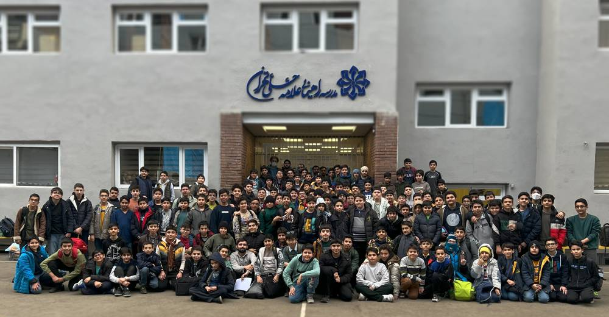

:زندگی نامه
.من محمدحسین برهان مجرد هستم
.در سیزده آذر سال ۱۳۹۰ در شهر قم به دنیا آمدم
:تحصیلات
.کلاس اول دبستان را در مدرسه آینده سازان قم تحصیل کردم پس از آن به شهر تهران آمدم و در دبستان امام هادی به ادامه تحصیل پرداختم.سال ششم با توصیه معلمم برای آزمون تیزهوشان مطالعه کردم.در آزمون ورودی مدارس سمپاد شرکت کردم و پذیرفته شدم.در حال حاضر در مقطع متوسطه یک مدرسه .علامه حلی یک در حال تحصیل هستم✏️📕

:علایق
.ورزش فوتبال رشته ورزشی مورد علاقه من است⚽ در ده سالگی با مربیگری آقای فرهاد فیض آبادی .بازیکن سابق پرسپولیس، به آموزش فوتبال پرداختم .همچنین آموزش پیانو را از دوازده سالگی آغاز کردم🎹

| اسم: | محمدحسین برهان مجرد |
| سن: | 13 |
| قد: | 170cm |
| جرم: | 49kg |
| نظرت را بنویس: |